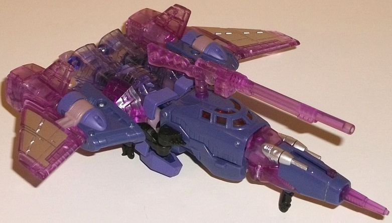
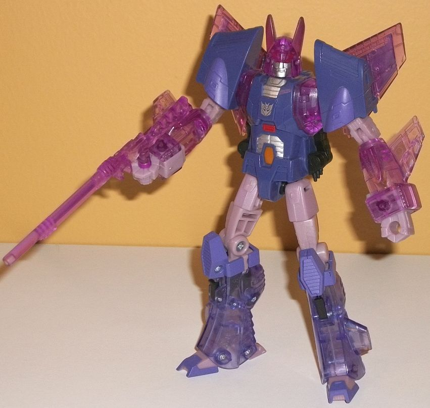
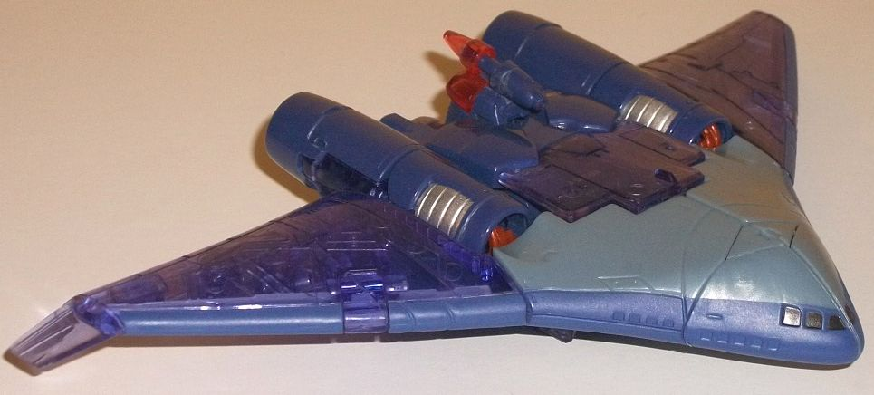
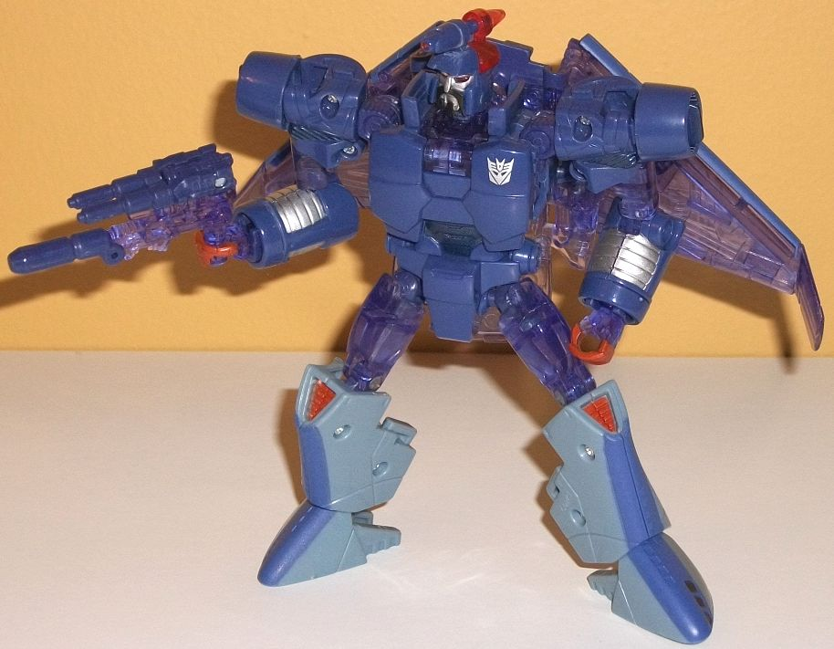
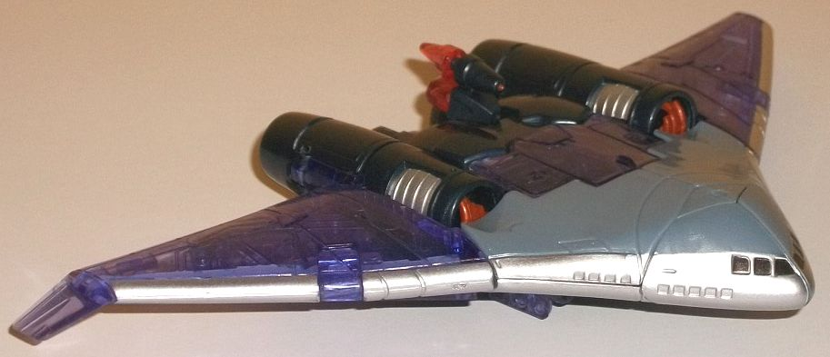
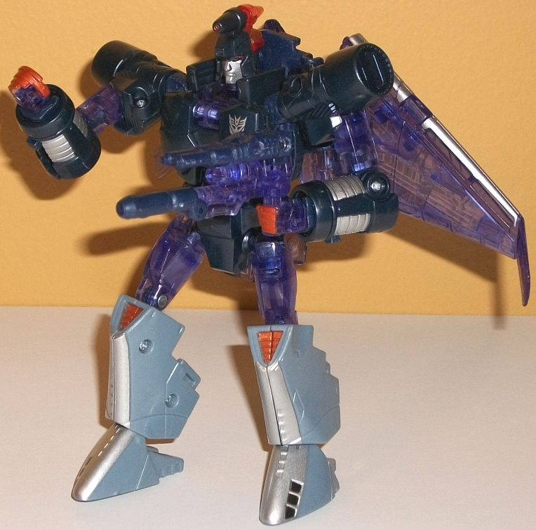

"Armada
of Cyclonus" Platinum Edition Set [K-Mart Exclusive]
"Armada
of Cyclonus" Platinum Edition Set [K-Mart Exclusive]
Allegiances
: Decepticon
Overall Rating
: 9.1
(NOTE: Because this set is composed of repaints,
this is not a full-blown review. This mainly covers any changes made to
the set and the color scheme, and merely compares it to the original versions
of these molds. For a review on Universe 2.0 Cyclonus, go
here
.
For a review on the original Generations Scourge-- the mold used for both
Scourge and the Sweep-- go
here
.)
Cyclonus


Size
: Deluxe
Difficulty of Transformation
: Medium
Color Scheme
: Transparent violet,
dull pale purple, light pale pinkish purple, and some purple, silver, transparent
pale purplish blue, metallic pumpkin orange, black, dull red, and transparent
cherry red
Individual Rating
: 9.4
This version of Cyclonus
takes the Reveal the Shield
"Battle in Space"
2-pack version of Cyclonus
as a base, and adds in a pretty good amount
of transparent plastic (like the other toys in this set) to make it look
like he's in the process of being "reformatted" by Unicron. It's a pretty
darned cool effect, though due to the plastic requirements, not as much
of Cyclonus is as transparent as I'd like. Still, first let's cover what's
the same as the "Battle in Space" Cyclonus-- the base color of dull pale
purple on the shoulders, most of the nosecone, and the main body are the
same; the slightly lighter purple paint on the shoulders, knees, and feet;
the light pale pinkish purple plastic on the upper legs, fists, and the
mid-parts of the arms; black plastic on some minor connector pieces; and
silver, metallic pumpkin orange, and dull red paint apps on the chest,
abs, and face, with the same awesome transparent cherry red plastic for
the eyes. This time around, new silver paint apps have been added to his
main wings as well, which helps in robot mode so they look transparent
but you still can't see COMPLETELY through them, thus making his shoulders
look a bit more solid. The transparent plastic for this version of Cyclonus
comes in two flavors. The first is a quite nice transparent violet shade,
used on his main wings, lower arms, shoulder connnector pieces, and, oddly,
the middle portion of his nosecone because of the way the plastic pieces
are sorted out, I guess. His weapon is also this color. His legs, interestingly,
are a different shade of transparent plastic-- a rather pale purplish blue,
which is an okay shade, but it looks a bit too close to his dull pale purple
plastic-- it doesn't "glow" enough like he's being reformatted, unlike
with the transparent violet. The disconnect here is a bit odd, too-- why
not use the same transparent shade of plastic as much of the toy as possible,
given the whole gimmick? Still, it's a pretty cool color scheme, overall.
Interestingly enough,
for this version of Cyclonus a hand hole has (finally) been drilled into
his left hand in addition to his existing right hand hole, so he can hold
his weapon in either hand now. His weapon, unfortunately, is no longer
Nightstick but instead been replaced with a plain rifle-like gun-- a recolor
of the initial
Generation Sergeant Kup's
, which
doesn't really fit Cyclonus.
Scourge


Size
: Deluxe
Difficulty of Transformation
: Medium
Color Scheme
: Transparent light
bluish purple, moderately dark periwinkle, milky pale teal, and some silver,
transparent cherry red, black, and moderately light metallic red
Individual Rating
: 8.8
Unlike with Cyclonus,
Scourge's recolor for this set is a COMPLETE recolor-- everything has been
changed color-wise when compared to the initial release, not just some
parts. It's still definitely a very Scourge-y color scheme, though, with
blue and light gray being the main colors-- it's just that blue is MUCH
more prevalent on this version. The wings, upper legs, and part of the
main body/robot "skirt" are all a transparent light bluish purple, of approximately
the same shade as Cyclonus' legs in this set. It fits quite well in with
the fairly dark shade of periwinkle used for Scourge's main body, head,
and arms-- they both complement each other, there I wish there was a titch
more color difference between the two shades. There's also a long stripe
of periwinkle along the entire front end of the vehicle mode, which again,
complements the transparent plastic pretty nicely. It also works well against
the milky pale teal used for the center portion of the vehicle body/robot
lower legs-- there's where it contrasts very well. The teal is also the
closest this toy has to "gray", as it's kind of a grayish teal. I think
using it just a titch more on the toy would've helped with more contrast
and color variation. There's also a bit of transparent cherry plastic on
the back of Scourge's head, for some really nice red light piping for the
robot eyes. As for paint apps, there's some silver on the lower arms and
the face; black on the front windows and Scourge's beard; and some somewhat
light metallic red on the robot claws and kneecaps. The red helps emphasize
Scourge's creepy claws, and obviously contrasts agains the blue and teal
nicely. The other colors are fairly neutral and don't contribute to the
color scheme much, other than varying up things a bit.
No mold changes have
been made to this version of Scourge.
Sweep


Size
: Deluxe
Difficulty of Transformation
: Medium
Color Scheme
: Transparent light
bluish purple, dark milky semi-metallic navy blue, milky pale teal, and
some silver, transparent cherry red, black, and moderately light metallic
red
Individual Rating
: 9.0
The Sweep is largely
the same as Scourge, but with a few minor changes. The first is that the
periwinkle-colored stripe along the front of Scourge's vehicle mode has
been changed to a silver stripe for the Sweep. This looks better against
the duller transparent plastic, but not as good against the pale teal,
so overall I think that change is a wash. The more obvious change is that
the chest, arms, and head have had the perwinkle plastic from Scourge changed
to a darker, fairly milky semi-metallic navy blue shade. It's a very lovely
shade of the color, and because it's darker contrasts better against the
lighter surrounding colors, while still being "close enough" to mesh in
pretty well with Scourge.
Oddly enough, the Sweep
has a new head mold-- and
WHHHAAAAATTT??!?
-- It's Devcon's?! Basically
it's Scourge's but thinner, with a more straightforward face and no beard.
It works decently as a Sweep that prefers to shave, I suppose, but it's
surprising a Scourge clone, of all redecoes, gets a new head. Even weirder
is that it's NOT the Devcon head used for the
BotCon
2014 exclusive
-- apparently they didn't have access to THIS sculpt
for THAT toy, but both they and Hasbro had the same idea. Huh. Other than
the head, no mold changes have been made to the Sweep.
"Armada of Cyclonus" Bio
:
The Armada of Cyclonus was born of the
universe's ultimate evil, Unicron, for a singular purpose: destruction
of the Autobot Matrix of Leadership. With the Matrix passed from Optimus
Prime to Ultra Magnus, Unicron needs a soldier to do his bidding. He saved
Megatron from oblivion, giving him a new body for his new mission. His
new name shall be Galvatron, and these shall be his minions:
Decepticon Sweeps
: Created by
Unicron to be the Huntsman.
Cyclonus
: Created by Unicron
to be the Warrior.
Scourge
: Created by Unicron to
be the Tracker.
If it weren't for the
price, the "Armada of Cyclonus" set would be an easy recommendation. All
three are excellent molds, and I love the "translucent reformatting" gimmick
for the color schemes. The colors are nice, and there's just enough differences
to the Sweep compared to Scourge to make them both worth purchasing. I
did wish Cyclonus had his Targetmaster Nightstick, but otherwise he's quite
nice as well. Unfortunately, this set follows the "Platinum Edition" schtick
of being over priced (though not as badly as some others). The prices for
this set vary a fair amount, but they're all easily more than these toys
would be if all three were released individually at mass retail. Still,
if that doesn't bother you, by all means load up on some cool minions!
Reviews by Beastbot
Back to Transformers:
Generations Index